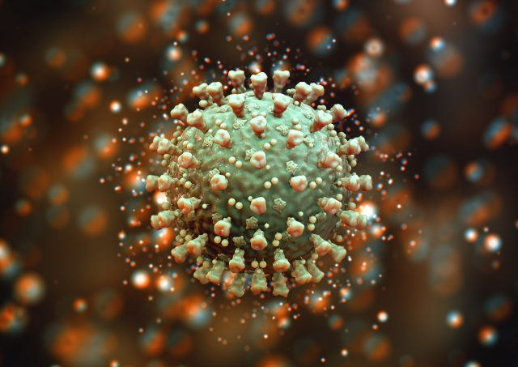
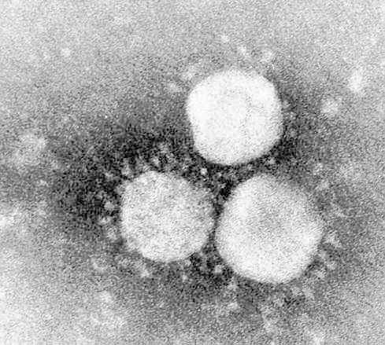
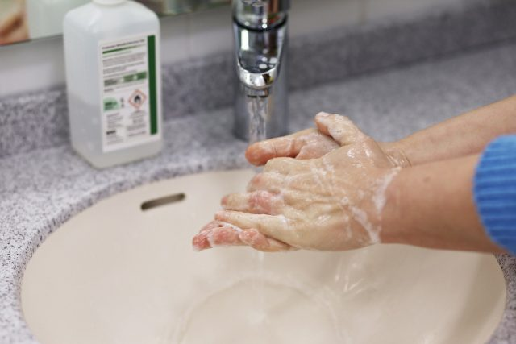

A Comprehensive Guide to COVID-19 and Diabetes
This page provides detailed information regarding the emerging coronavirus (COVID-19) outbreak and specific considerations and recommendations for the general public and people with diabetes.
COVID-19 is a respiratory disease that is caused by the recently-identified novel coronavirus, SARS-CoV-2.The virus was first reported in China in late 2019 and has spread globally over the course of several months.Much research is still ongoing about the new pathogen, which, while structurally related to other well-characterized viruses, like MERS-CoV, is a virus that is new to humans.Much remains to be uncovered concerning its specific infectious properties, and in order to develop the most appropriate treatments (e.g., antivirals) and prevention and containment measures (e.g., vaccine).
Viruses are microscopic elements containing genetic material (DNA or RNA) and a protective coating made up primarily of different proteins.Viruses can come in many different shapes and sizes and are considerably smaller than bacteria.
Unlike living things, viruses cannot reproduce independently; they must invade a host and use their machinery in order to replicate.After using the host cells to replicate, the viral particles exit, and in turn, invade more cells.The proteins on the outside of viruses allow them to bind to and infect different cell types; so, while some viruses may only be able to invade cells in the intestinal tract, others can attack the respiratory tract.
Eventually, the immune system of the host will recognize the virus and clear the infection.The infection and immune response can cause unpleasant symptoms in the host, depending on the specific nature of the infection.
Electron micrograph showing human coronavirus 229E. (Courtesy S.Sikotra, Leicester Royal Infirmary, Leicester, England.)
The family of coronaviruses are often spherical in shape and contain proteins on the surface that have a 'crown or halo-like' appearance.All coronaviruses contain RNA as their genetic material.This family of viruses are found in mammals and birds and most typically cause an upper respiratory infection that is mild and short in duration (i.e., common cold) in humans.
Most typically, coronaviruses spread via small respiratory droplets (such as those produced during a sneeze or cough).They often enter the respiratory tract via the nose, and can bind to and infect human cells, causing symptoms after several days of incubation.
The most common symptoms of the novel coronavirus are:
Other symptoms may be present, including sore throat and gastrointestinal discomforts, such as vomiting, diarrhea, or lack of appetite, among others.A loss in the sense of smell and/or taste has also been reported.
It is impossible to definitively determine if symptoms are caused by COVID-19 unless you are specifically tested for COVID-19.Notably, some patients may have no symptoms at all, and other may just experience very mild symptoms and thus not suspect infection with COVID-19.
There are no specific treatments for COVID-19 disease that are currently approved, although research is ongoing to identify the most effective antiviral and anti-inflammatory therapies, as well as to develop a vaccine to prevent infections and help control disease spread.Patients are likely to receive treatment that is specific to their case and symptoms, such as fever-reducing medications, cough suppressant agents, oxygen if needed, along with supportive measures, like rest and hydration.
COVID-19 infection reached pandemic proportions in March 2020.The disease is very contagious, and while most patients will not experience serious symptoms or complications, and recover quickly, the disease can be especially serious, and deadly, for certain patient populations.
COVID-19 appears to be generally well-tolerated by younger and generally healthy individuals, with recovery rates estimated to be well over 99%.However, for the older (in particular, over 65 years) community, the disease is much riskier in terms of developing serious complications and carries a markedly higher mortality risk.
Also, patients with certain pre-existing health conditions are more likely to experience serious complications and death from COVID-19.Specifically, those with a pre-existing health condition, such as high blood pressure, diabetes, heart disease, and kidney disease, as well as those who are immunocompromised may be predisposed to more serious illness.This may include those who are HIV-positive, taking certain cancer drugs, and those with various other underlying health conditions that affect the lungs (e.g., asthma, etc.).
Importantly, as discussed previously here, when it comes to people with diabetes,
'Your individual risk will vary widely depending on your specific health status, regardless of your diabetes diagnosis.Your age, other related and unrelated health conditions, and blood glucose management profile, all play a role in determining your overall risk.For instance, as per the JDRF, those who have type 1 diabetes are 'not necessarily at higher risk of developing serious complications from the disease.Those at greatest risk are those who have another, or second chronic disease (such as a compromised immune system, heart disease or renal failure).''
'If diabetes is well-managed, the risk of getting severely sick from COVID-19 is about the same as the general population.When people with diabetes do not manage their diabetes well and experience fluctuating blood sugars, they are generally at risk for a number of diabetes-related complications.Having heart disease or other complications in addition to diabetes could worsen the chance of getting seriously ill from COVID-19, like other viral infections, because your body’s ability to fight off an infection is compromised.'
As COVID-19 infection spreads, a major concern has emerged for those who experience serious symptoms and require hospital care (such as oxygen support and, in particular, use of a ventilator).As infections peak, the main concern is that hospitals will become overwhelmed and may not have sufficient resources to be able to provide timely and appropriate care to everyone who is in critical condition.
As the saying goes, the best treatment is prevention, and taking measures to protect yourself from infection as well as to generally prevent the spread of COVID-19 is key to a favorable outcome for individual patients, as well as globally.Broadly, there are two major strategies: disinfection measures and social distancing.
Photo credit: zukunftssicherer (Pixabay)
Disinfection measures include strategies like:
To prevent the transmission of COVID-19 from person to person, everyone is being urged to 'socially distance' as much as possible.The main strategies for social distancing include:
Also, if you are at high risk for serious complications from COVID-19, or if you are experiencing symptoms of the disease, or if you were in contact with someone who has shown symptoms or tested positive, even more drastic measures are recommended.Those individuals should self-isolate for a period of at least several weeks.This means that the individuals should stay in one place (e.g., a designated room in their residence if they live with others) and avoid social in-person contact altogether.If the patient needs to leave their location (e.g., for medical care), they would be instructed to use additional protective measures (e.g., wear a mask).
If you think you are experiencing symptoms of COVID-19 infection, you should self-isolate immediately and seek additional advice from your healthcare provider.Most likely, your symptoms will not become severe, and you will be instructed to treat the specific discomforts (cough, fever) at home.
As a person with diabetes, keeping a closer than ever eye on your blood glucose management is also key to improving your odds of an uncomplicated recovery.Preventing diabetic ketoacidosis (DKA) is of upmost importance.Managing blood glucose levels as optimally as possible, staying hydrated, and getting plenty of rest, will altogether help to support your immune system function.
Photo by Adobe Stock
In addition to following typical 'sick day rules' and looking out for symptoms of DKA, be on the lookout for the following serious symptoms, that will necessitate immediate medical care:
As always, contact your healthcare provider for specific advice concerning at-home treatment for the illness, as well as for guidance on any worsening or new symptoms, or if you suspect you are beginning to experience any of the above complications.
COVID-19 (Coronavirus) – ADA
Coronavirus (COVID-19) – CDC
Coronavirus and Diabetes: Your Questions Answered – Diabetes Daily
Centers for Disease Control and Prevention (2020) Coronavirus (COVID-19) https://www.cdc.gov/coronavirus/2019-ncov/index.html
University of Texas Medical Branch at Galveston (1996) Medical Microbiology, 4th ed.Chapter 6: Coronaviruses.https://www.ncbi.nlm.nih.gov/books/NBK7782/
World Health Organization (2020) Coronavirus.https://www.who.int/health-topics/coronavirus#tab=tab_1
Posted On: 2020-03-24T00:00:00
Posted By: Maria Muccioli Ph.D.



Content Date: 2020-03-24
Download Date: 2021-04-08
Document ID: L0C049KWV